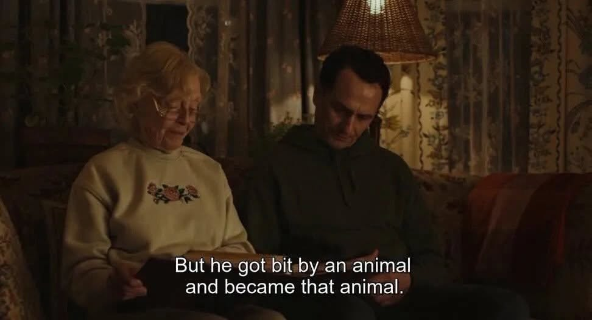

And became that animal

Ruth, paging through her photo album, points to an old boyfriend she says she loved very much, delivers the line, and never explains it.
- Source:
- Widow’s Bay, season 1, episode 10, “We Hope You Enjoyed Your Time!” (Apple TV, 2026). Spoken by Ruth (K Callan).